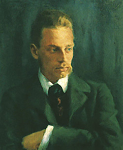

诗人与他的一切
与诗人对坐
“漫长的康复”
我的一生就是一场漫长的康复...孤独一如我历来的生活，甚至更甚。 ------------莱纳·马利亚·里尔克
正如里尔克所写，一生便是写诗的一生，也是康复的一生。于多数的诗人，一生就是在爱，忧郁，浪费时光中纠缠。有的人选择深沉追忆，有的人选择一生梦幻。于此，我选择了两位最爱的诗人简单介绍。
从前我是一朵云
- 1888 -
在里斯本的某个角落，诞生了一个幼小婴童，那天应该也很宁静，那时吹拂里斯本的海风现在也吹着，现在想想，那天也很普通
- 1894 -
1894年，六岁，拥有了第一个笔名，拥有了第一支写诗的笔，拥有了第一首诗，拥有了自始而终的命运
- 1914 -
在不安中爱，还是在爱中不安，那年，太多的思潮，汹涌，那年，太多的不安，但是我仍拥有你，而你，欧菲莉亚，使自然更美丽
- 1915 -
卡埃罗死，但总有人活着，会有更多的人活着，如果可能想去经历一百场人生，如果可能，我要让每首诗有一个美丽的名字
- 1929 -
因为你选择了我，让我拥有你爱你，我的眼睛在凝视万物时停留得更久。我不为以前的我而后悔，因为我还是同一个人。我只遗憾以前不曾爱你。把你的手放在我的手里，让我们保持安静，被生活环绕
- 1935 -
因肝病恶化，佩索阿离世，终身未婚
由于感觉到爱
- 1904 -
小聂鲁达出生，在这片荒蛮美丽的土地，在充满神话传说的过去，小聂鲁达出生
- 1924 -
20岁那年正好，那年他发表了《二十首情诗与一首绝望的歌》
- 1936 -
在这之前，他写了《大地的居所》，西班牙战争爆发，他依然加入国际组织，捍卫共和国，当法西斯入侵苏联，他写了《献给斯大林格勒的情歌》与《献给斯大林格勒的新情歌》，他四处采访，四处进行演讲，在战争中追寻心中执念
- 1945 -
那一年，第二次世界大战结束，那一年，聂鲁达当选国会议员，次年却被当权者通缉。1949年离开智利，在世界各地宣传和平思想，走访各国，其中三访中国。
- 1971 -
获得诺奖桂冠：诗歌具有自然力般的作用，复苏了一个大陆的命运与梦想。
- 1973 -
因病逝世


爱情
自然
回忆
诗